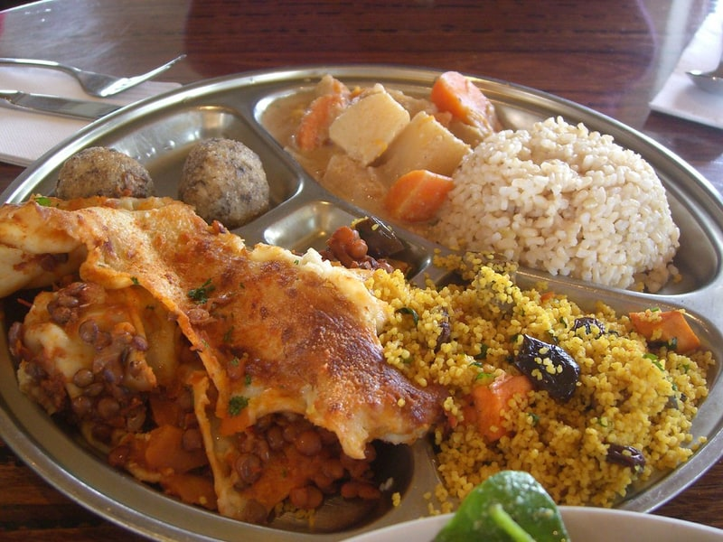

Dania z makaronu
Risotto z grzybami
Risotto z grzybami: 4 g białka, 145 kcal, 24 g węglowodanów i 4 g tłuszczu na 100 g. Kategoria: Dania z makaronu.
Kalorie145 kcalna 100 g
Białko / proteiny4 g
Węglowodany24 g
Tłuszcz4 g
Cena (szac.)~1,76 złza 100 g
Ceny zaktualizowano: maj 2026 (szacunek — ceny w popularnych supermarketach)
Porcja: porcja (250g)
| Kalorie | 363 kcal |
|---|---|
| Białko | 10 g |
| Węglowodany | 60 g |
| Tłuszcz | 10 g |
| Cena (szac.) | ~4,39 zł |
Szczegółowe składniki odżywcze na 100 g
| Wartość energetyczna (kalorie) | 145 kcal |
|---|---|
| Białko (proteiny) | 4 g |
| Węglowodany | 24 g |
| Tłuszcz | 4 g |
| Tłuszcze nasycone | 2 g |
| Tłuszcze nienasycone | 2 g |
| Witaminy i minerały | Tiamina (B1), Żelazo, Magnez |
| Współczynnik kcal / 1 g białka | 36.3 |
| Cena produktu (szac. za 100 g) | ~1,76 zł |
| Cena za 100 g białka (szac.) | ~43,90 zł |